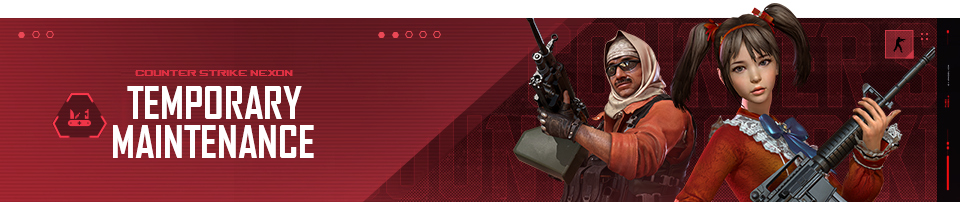

Dear, Soldiers!
[Bahasa Indonesia]
NB: Perkiraan lama waktu bisa berubah tanpa pemberitahuan.
Diberitahukan bahwa akan ada maintenance sementara pada hari Rabu, 13 Mei 2026. Seluruh server game Counter-Strike Nexon akan dinonaktifkan untuk sementara waktu.
Berikut adalah perkiraan waktu berdasarkan zona waktu:
[English]
NB: Estimated length of time may change without notification.
Notified that there will be temporary maintenance on Wednesday, May 13th 2026. All Counter-Strike Nexon game servers will be temporarily disabled.
Here are the estimated times based on time zones: